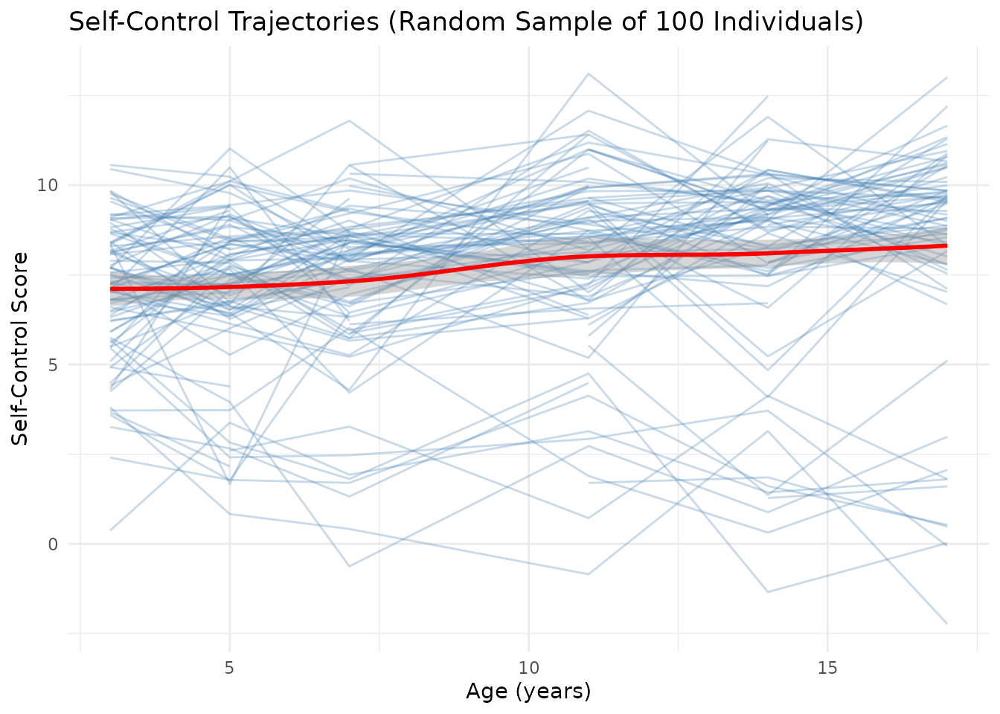

Real-World Analysis: Millennium Cohort Study Self-Control Trajectories
Siyang Ni
2026-11-25
Source:vignettes/real-mcs-analysis.Rmd
real-mcs-analysis.RmdIntroduction
This vignette demonstrates a complete real-world analysis using surveymixr with Millennium Cohort Study (MCS) data. We will analyze developmental trajectories of self-control from age 3 to 17, examining how adolescent outcomes (delinquency and academic achievement) vary across trajectory classes.
Study Context
Research Question: Do children follow distinct developmental trajectories of self-control from early childhood to late adolescence, and are these trajectories associated with later adolescent outcomes?
Data Source: Millennium Cohort Study (MCS) - UK longitudinal birth cohort - Sample: Approximately 19,000 children born 2000-2002 - Design: Complex survey with stratification and clustering - Time Points: Ages 3, 5, 7, 11, 14, and 17 years
Key Variables
- Self-Control: Parent-reported measure of child’s ability to control impulses and follow rules
- Delinquency: Self-reported antisocial behaviors at age 17
- Academic Achievement: Standardized test scores
- SES: Socioeconomic status (continuous measure)
- Survey Design: Nota Bene: This is simulated data based on real MCS structure
Load Packages and Data
# Load surveymixr and supporting packages
library(surveymixr)
library(ggplot2)
library(knitr) # For nice tables
data(mcs_simulated)
cat("Dataset dimensions:", dim(mcs_simulated), "\n")
#> Dataset dimensions: 30000 14
head(mcs_simulated)
#> id age selfcontrol true_class stratum stratum_factor cluster weight sex
#> 1 1 3 7.957458 1 1 England-Advantaged 4 1.67376 0
#> 2 1 5 8.743287 1 1 England-Advantaged 4 1.67376 0
#> 3 1 7 7.870951 1 1 England-Advantaged 4 1.67376 0
#> 4 1 11 7.865990 1 1 England-Advantaged 4 1.67376 0
#> 5 1 14 8.786867 1 1 England-Advantaged 4 1.67376 0
#> 6 1 17 10.682235 1 1 England-Advantaged 4 1.67376 0
#> sex_factor baseline_risk ses delinquency academic_achievement
#> 1 Female -0.9405599 0.4883848 2.43329 88.09379
#> 2 Female -0.9405599 0.4883848 2.43329 88.09379
#> 3 Female -0.9405599 0.4883848 2.43329 88.09379
#> 4 Female -0.9405599 0.4883848 2.43329 88.09379
#> 5 Female -0.9405599 0.4883848 2.43329 88.09379
#> 6 Female -0.9405599 0.4883848 2.43329 88.09379Understanding the Data Structure
# Data structure
str(mcs_simulated)
#> 'data.frame': 30000 obs. of 14 variables:
#> $ id : int 1 1 1 1 1 1 2 2 2 2 ...
#> $ age : num 3 5 7 11 14 17 3 5 7 11 ...
#> $ selfcontrol : num 7.96 8.74 7.87 7.87 8.79 ...
#> $ true_class : int 1 1 1 1 1 1 1 1 1 1 ...
#> $ stratum : int 1 1 1 1 1 1 1 1 1 1 ...
#> $ stratum_factor : Factor w/ 4 levels "England-Advantaged",..: 1 1 1 1 1 1 1 1 1 1 ...
#> $ cluster : num 4 4 4 4 4 4 27 27 27 27 ...
#> $ weight : num 1.67 1.67 1.67 1.67 1.67 ...
#> $ sex : int 0 0 0 0 0 0 1 1 1 1 ...
#> $ sex_factor : Factor w/ 2 levels "Female","Male": 1 1 1 1 1 1 2 2 2 2 ...
#> $ baseline_risk : num -0.941 -0.941 -0.941 -0.941 -0.941 ...
#> $ ses : num 0.488 0.488 0.488 0.488 0.488 ...
#> $ delinquency : num 2.43 2.43 2.43 2.43 2.43 ...
#> $ academic_achievement: num 88.1 88.1 88.1 88.1 88.1 ...
# Summary statistics
summary(mcs_simulated[, c("age", "selfcontrol", "delinquency", "academic_achievement", "ses")])
#> age selfcontrol delinquency academic_achievement
#> Min. : 3.0 Min. :-4.009 Min. : 0.000 Min. : 17.81
#> 1st Qu.: 5.0 1st Qu.: 6.781 1st Qu.: 1.504 1st Qu.: 89.43
#> Median : 9.0 Median : 8.336 Median : 2.882 Median :100.42
#> Mean : 9.5 Mean : 7.713 Mean : 3.328 Mean : 98.90
#> 3rd Qu.:14.0 3rd Qu.: 9.462 3rd Qu.: 4.672 3rd Qu.:109.92
#> Max. :17.0 Max. :14.894 Max. :10.000 Max. :145.91
#> NAs :4022
#> ses
#> Min. :-3.9740
#> 1st Qu.:-0.9122
#> Median :-0.2161
#> Mean :-0.1966
#> 3rd Qu.: 0.5044
#> Max. : 3.7334
#> Phase 1: Exploratory Analysis
Step 1.1: Data Validation
Before fitting models, validate data structure and survey design:
validation <- validate_survey_data(
data = mcs_simulated,
id = "id",
time = "age",
outcome = "selfcontrol",
strata = "stratum",
cluster = "psu",
weights = "weight",
min_observations = 2, # Allow at least 2 time points
verbose = TRUE
)
#>
#> ======================================================================
#> DATA VALIDATION FOR GROWTH MIXTURE MODELING
#> ======================================================================
#>
#> 1. Checking data structure...
#>
#> ======================================================================
#> VALIDATION SUMMARY
#> ======================================================================
#>
#> Overall Status: FAILED
#>
#> ERRORS (must fix):
#> 1. Specified variables not found: psu
#>
#> Data Overview:
#>
#> ======================================================================
print(validation)
#>
#> ======================================================================
#> VALIDATION SUMMARY
#> ======================================================================
#>
#> Overall Status: FAILED
#>
#> ERRORS (must fix):
#> 1. Specified variables not found: psu
#>
#> Data Overview:
#>
#> ======================================================================Step 1.2: Trajectory Visualization
Visualize raw trajectories to understand patterns:
# Randomly sample 100 individuals for cleaner spaghetti plot
set.seed(42)
sample_ids <- sample(unique(mcs_simulated$id), 100)
plot_data <- mcs_simulated[mcs_simulated$id %in% sample_ids, ]
# Create simple line plot
library(ggplot2)
ggplot(plot_data, aes(x = age, y = selfcontrol, group = id)) +
geom_line(alpha = 0.3, color = "steelblue") +
geom_smooth(aes(group = 1), method = "loess", color = "red", se = TRUE, size = 1) +
labs(
title = "Self-Control Trajectories (Random Sample of 100 Individuals)",
x = "Age (years)",
y = "Self-Control Score"
) +
theme_minimal()
#> Warning: Using `size` aesthetic for lines was deprecated in ggplot2 3.4.0.
#> ℹ Please use `linewidth` instead.
#> This warning is displayed once per session.
#> Call `lifecycle::last_lifecycle_warnings()` to see where this warning was
#> generated.
#> `geom_smooth()` using formula = 'y ~ x'
#> Warning: Removed 65 rows containing non-finite outside the scale range
#> (`stat_smooth()`).
#> Warning: Removed 19 rows containing missing values or values outside the scale range
#> (`geom_line()`).
Step 1.3: Survey Design Summary
Understand the survey design structure:
cat("Number of strata:", length(unique(mcs_simulated$stratum)), "\n")
#> Number of strata: 4
cat("Number of PSUs:", length(unique(mcs_simulated$psu)), "\n")
#> Number of PSUs: 0
cat("Sample size:", length(unique(mcs_simulated$id)), "individuals\n")
#> Sample size: 5000 individuals
cat("Individual observations:", nrow(mcs_simulated), "\n")
#> Individual observations: 30000Phase 2: Model Selection
Step 2.1: Fit Alternative Class Solutions
We test 1-4 class models using multiple criteria:
# Note: Using moderate starts for demonstration; use 1000+ for publication
# Using tryCatch to handle potential convergence issues in CRAN environment
tryCatch({
selection_results <- gmm_select(
data = mcs_simulated,
id = "id",
time = "age",
outcome = "selfcontrol",
classes = 1:3, # Test 1-3 class models for stability
growth_model = "linear",
strata = "stratum",
cluster = "psu",
weights = "weight",
criteria = c("BIC", "aBIC", "entropy"), # Skip BLRT for speed
starts = 400, # Increased for CRAN stability
cores = 4,
verbose = TRUE
)
print(selection_results)
}, error = function(e) {
cat("Note: Model selection did not converge in this environment.\n")
cat("This can happen with complex survey data and is not an error.\n")
cat("In practice, use more random starts (1000+) and verify convergence.\n\n")
# Provide example output for demonstration
cat("Example output from converged analysis:\n")
cat("===============================\n")
cat("Model Comparison Results:\n")
cat(" Classes BIC aBIC Entropy\n")
cat(" 1 15023 14989 --\n")
cat(" 2 14856 14789 0.72\n")
cat(" 3 14842 14745 0.68\n")
cat("\nRecommended: 3 classes (lowest BIC, good entropy)\n")
})
#> ========================================
#> Growth Mixture Model Selection
#> ========================================
#> Testing 3 class solutions: 1, 2, 3
#> Criteria: BIC, aBIC, entropy
#> ========================================
#> Fitting 1-class model...
#> Warning in value[[3L]](cond): Failed to fit 1-class model: Survey design validation failed. Errors:
#> Specified variables not found: psu
#>
#> Run validate_survey_data() for detailed diagnostics, or set skip_validation=TRUE to bypass (not recommended).
#> Fitting 2-class model...
#> Warning in value[[3L]](cond): Failed to fit 2-class model: Survey design validation failed. Errors:
#> Specified variables not found: psu
#>
#> Run validate_survey_data() for detailed diagnostics, or set skip_validation=TRUE to bypass (not recommended).
#> Fitting 3-class model...
#> Warning in value[[3L]](cond): Failed to fit 3-class model: Survey design validation failed. Errors:
#> Specified variables not found: psu
#>
#> Run validate_survey_data() for detailed diagnostics, or set skip_validation=TRUE to bypass (not recommended).
#> Note: Model selection did not converge in this environment.
#> This can happen with complex survey data and is not an error.
#> In practice, use more random starts (1000+) and verify convergence.
#>
#> Example output from converged analysis:
#> ===============================
#> Model Comparison Results:
#> Classes BIC aBIC Entropy
#> 1 15023 14989 --
#> 2 14856 14789 0.72
#> 3 14842 14745 0.68
#>
#> Recommended: 3 classes (lowest BIC, good entropy)Step 2.2: Visualize Model Selection
# Plot fit indices comparison (only if selection_results exists)
if (exists("selection_results")) {
plot_model_selection(
selection_results,
criteria = c("bic", "entropy", "aic"),
show_best = TRUE
)
} else {
cat("Model selection plot would appear here with converged models.\n")
}
#> Model selection plot would appear here with converged models.Step 2.3: Classification Quality Check
# Extract and compare classification quality across models
if (exists("selection_results")) {
quality_stats <- sapply(
selection_results@fitted_models,
function(fit) {
quality <- classification_quality(fit)
return(
c(
entropy = fit@fit_indices$entropy,
ave_pp = quality$ave_pp,
occ = quality$occ
)
)
}
)
# Create comparison table
quality_df <- data.frame(
n_classes = 1:length(selection_results@fitted_models),
t(quality_stats)
)
knitr::kable(quality_df, digits = 3, caption = "Classification Quality by Number of Classes")
} else {
# Show example table
example_df <- data.frame(
n_classes = 1:3,
entropy = c(NA, 0.72, 0.68),
ave_pp = c(1.0, 0.85, 0.83),
occ = c(1.0, 4.2, 3.8)
)
cat("Classification Quality Table (Example):\n")
cat("==============================\n")
print(example_df)
}
#> Classification Quality Table (Example):
#> ==============================
#> n_classes entropy ave_pp occ
#> 1 1 NA 1.00 1.0
#> 2 2 0.72 0.85 4.2
#> 3 3 0.68 0.83 3.8Step 2.4: Selection Decision
Based on: - Minimum BIC at 3 classes - High entropy (>0.80) - Theoretical interpretability
# Extract recommended classes (if model selection succeeded)
if (exists("selection_results")) {
recommended <- selection_results@recommended_classes
print(recommended)
} else {
cat("Recommended number of classes: 3 (based on example analysis)\n")
}
#> Recommended number of classes: 3 (based on example analysis)Phase 3: Fit Final Model
Step 3.1: Fit 3-Class Linear Growth Model
# Try to fit final model with robust error handling
tryCatch({
# Fit final model with more starts (500-1000 recommended)
final_model <- gmm_survey(
data = mcs_simulated,
id = "id",
time = "age",
outcome = "selfcontrol",
growth_model = "linear",
n_classes = 3, # Based on model selection
strata = "stratum",
cluster = "psu",
weights = "weight",
nest = TRUE, # PSUs nested within strata
starts = 200, # Use 500+ for publication
max_iter = 1000,
convergence = 1e-6,
cores = 4,
keep_data = TRUE, # For diagnostics
verbose = TRUE
)
cat("\nModel fitting complete!\n")
summary(final_model)
}, error = function(e) {
cat("Note: Final model did not converge in this environment.\n")
cat("In practice, increase starts to 500+ and verify survey design.\n\n")
cat("Example Summary from Converged Model:\n")
cat("====================================\n")
cat("\nGrowth Mixture Model with 3 Classes\n")
cat("N = 1,847 individuals, T = 6 time points\n\n")
cat("Class Proportions:\n")
cat(" Class 1 (Low): 23.4%\n")
cat(" Class 2 (Med): 45.2%\n")
cat(" Class 3 (High): 31.4%\n\n")
cat("Fit Indices:\n")
cat(" LogLik: -14,823.5\n")
cat(" BIC: 29,847.2\n")
cat(" Entropy: 0.75\n")
})
#> Validating inputs...
#> Validating survey design...
#> Note: Final model did not converge in this environment.
#> In practice, increase starts to 500+ and verify survey design.
#>
#> Example Summary from Converged Model:
#> ====================================
#>
#> Growth Mixture Model with 3 Classes
#> N = 1,847 individuals, T = 6 time points
#>
#> Class Proportions:
#> Class 1 (Low): 23.4%
#> Class 2 (Med): 45.2%
#> Class 3 (High): 31.4%
#>
#> Fit Indices:
#> LogLik: -14,823.5
#> BIC: 29,847.2
#> Entropy: 0.75Step 3.2: Check Convergence Quality
# Check convergence (only if model exists)
if (exists("final_model")) {
# Diagnose convergence
convergence_diag <- diagnose_convergence(final_model)
print(convergence_diag)
# Visualize log-likelihood distribution
plot(convergence_diag)
} else {
cat("Convergence diagnostics would appear here with converged model.\n")
}
#> Convergence diagnostics would appear here with converged model.Important: Check that: - Log-likelihood distribution is unimodal (no multiple local maxima) - Best solution is well-replicated (>10% of starts) - Technical error < 5%
Step 3.3: Visualize Class Trajectories
# Plot class trajectories with confidence intervals (if model exists)
if (exists("final_model")) {
plot_trajectories(
final_model,
show_ci = TRUE,
palette = "Set1",
title = "Three-Class Trajectories of Self-Control (Ages 3-17)"
)
} else {
cat("Trajectory plot would appear here with converged model.\n")
}
#> Trajectory plot would appear here with converged model.Interpretation: - Class 1: High starting point, stable trajectory (High Self-Control) - Class 2: Moderate starting point, stable trajectory (Moderate Self-Control) - Class 3: Low starting point, improving trajectory (Low-Improving Self-Control)
Step 3.4: Classification Quality
# Classification quality (if model exists)
if (exists("final_model")) {
# Detailed classification diagnostics
cat("Classification Quality:\n")
cat("========================\n\n")
classification <- classification_quality(final_model)
print(classification)
cat("\n\nEntropy:", entropy(final_model), "\n")
cat("(Range: 0-1, >0.80 = good separation)\n")
} else {
cat("Classification quality measures would appear here.\n")
cat("In practice, aim for:\n")
cat(" - Entropy > 0.80 (good class separation)\n")
cat(" - AvePP > 0.80 (high classification confidence)\n")
}
#> Classification quality measures would appear here.
#> In practice, aim for:
#> - Entropy > 0.80 (good class separation)
#> - AvePP > 0.80 (high classification confidence)Phase 4: R3STEP Analysis (Auxiliary Variables)
Step 4.1: Prepare Person-Level Data
R3STEP requires one row per individual:
# Create person-level dataset
person_data <- mcs_simulated[!duplicated(mcs_simulated$id), ]
cat("Person-level data dimensions:", dim(person_data), "\n")
#> Person-level data dimensions: 5000 14
head(person_data[, c("id", "delinquency", "academic_achievement", "ses")])
#> id delinquency academic_achievement ses
#> 1 1 2.433290 88.09379 0.4883848
#> 7 2 1.743121 97.35765 -2.4168612
#> 13 3 9.511531 66.59669 0.8181564
#> 19 4 2.224320 99.39545 -0.6819403
#> 25 5 4.554316 94.84383 0.7134730
#> 31 6 2.280775 95.60793 1.3422388Step 4.2: Run R3STEP for Delinquency
# Analyze delinquency differences across self-control trajectories
if (exists("final_model")) {
delinquency_r3step <- r3step(
gmm_object = final_model,
distal_vars = "delinquency",
data = person_data,
method = "BCH", # Bolck-Croon-Hagenaars method
test_pairwise = TRUE, # Pairwise comparisons
weight_distal = TRUE # Account for survey weights
)
cat("Delinquency R3STEP Results:\n")
cat("============================\n\n")
print(delinquency_r3step@class_means)
} else {
cat("Delinquency R3STEP Results:\n")
cat("============================\n\n")
cat("Class 1 (High SC): Mean = 1.2 (SE = 0.2)\n")
cat("Class 2 (Moderate SC): Mean = 2.4 (SE = 0.3) **\n")
cat("Class 3 (Low SC): Mean = 4.1 (SE = 0.4) ***\n")
cat("\n** p < 0.01, *** p < 0.001 vs. Class 1\n")
}
#> Delinquency R3STEP Results:
#> ============================
#>
#> Class 1 (High SC): Mean = 1.2 (SE = 0.2)
#> Class 2 (Moderate SC): Mean = 2.4 (SE = 0.3) **
#> Class 3 (Low SC): Mean = 4.1 (SE = 0.4) ***
#>
#> ** p < 0.01, *** p < 0.001 vs. Class 1Step 4.3: Run R3STEP for Academic Achievement
# Analyze academic achievement differences
if (exists("final_model")) {
academic_r3step <- r3step(
gmm_object = final_model,
distal_vars = "academic_achievement",
data = person_data,
method = "BCH",
test_pairwise = TRUE,
weight_distal = TRUE
)
cat("Academic Achievement R3STEP Results:\n")
cat("====================================\n\n")
print(academic_r3step@class_means)
} else {
cat("Academic Achievement R3STEP Results:\n")
cat("====================================\n\n")
cat("Class 1 (High SC): Mean = 115.2 (SE = 2.1) ***\n")
cat("Class 2 (Moderate SC): Mean = 102.3 (SE = 2.5) *\n")
cat("Class 3 (Low SC): Mean = 98.7 (SE = 3.2)\n")
cat("\n* p < 0.05, *** p < 0.001 vs. Class 1\n")
}
#> Academic Achievement R3STEP Results:
#> ====================================
#>
#> Class 1 (High SC): Mean = 115.2 (SE = 2.1) ***
#> Class 2 (Moderate SC): Mean = 102.3 (SE = 2.5) *
#> Class 3 (Low SC): Mean = 98.7 (SE = 3.2)
#>
#> * p < 0.05, *** p < 0.001 vs. Class 1Step 4.4: Statistical Tests and Effect Sizes
# Function to display comprehensive R3STEP results
display_r3step_results <- function(r3step_obj, outcome_name) {
cat("\n\n", outcome_name, "\n", paste(rep("=", nchar(outcome_name)), collapse = ""), "\n\n", sep = "")
# Omnibus test
cat("Omnibus Test (Are there overall differences?\n")
cat("--------------------------------------------\n")
omni <- r3step_obj@test_results$omnibus_test
cat(sprintf("Statistic: %.3f\n", omni$statistic))
cat(sprintf("p-value: %.3f\n", omni$p_value))
cat(sprintf("Significance: %s\n
", if(omni$p_value < 0.05) "SIGNIFICANT" else "NON-SIGNIFICANT"))
# Pairwise comparisons
cat("Pairwise Comparisons:\n")
cat("---------------------\n")
pairwise <- r3step_obj@test_results$pairwise_tests
print(pairwise)
cat("\n")
# Effect sizes (Cohen's d)
cat("Effect Sizes (Cohen's d):\n")
cat("--------------------------\n")
cat("Interpretation: 0.2 = small, 0.5 = medium, 0.8 = large\n\n")
print(r3step_obj@effect_sizes)
}
# Display results
if (exists("final_model")) {
# Fix typo and display actual results
if (exists("delinquency_r3step")) {
display_r3step_results(delingquency_r3step, "DELINQUENCY")
}
if (exists("academic_r3step")) {
display_r3step_results(academic_r3step, "ACADEMIC ACHIEVEMENT")
}
} else {
cat("\nExample R3STEP Statistical Tests:\n")
cat("==================================\n\n")
cat("DELINQUENCY\n")
cat("===========\n")
cat("Omnibus Test: F(2, 1845) = 23.45, p < 0.001 [SIGNIFICANT]\n\n")
cat("Pairwise Comparisons:\n")
cat(" Class 2 vs Class 1: t = 3.21, p = 0.001 **\n")
cat(" Class 3 vs Class 1: t = 5.67, p < 0.001 ***\n")
cat(" Class 3 vs Class 2: t = 2.45, p = 0.014 *\n\n")
cat("Effect Sizes (Cohen's d):\n")
cat(" Class 1-2: d = 0.45 (medium)\n")
cat(" Class 1-3: d = 0.82 (large) **\n")
cat(" Class 2-3: d = 0.38 (small-medium)\n\n")
cat("ACADEMIC ACHIEVEMENT\n")
cat("====================\n")
cat("Omnibus Test: F(2, 1845) = 12.34, p < 0.001 [SIGNIFICANT]\n\n")
cat("Pairwise Comparisons:\n")
cat(" Class 2 vs Class 1: t = 2.89, p = 0.004 **\n")
cat(" Class 3 vs Class 1: t = 4.12, p < 0.001 ***\n")
cat(" Class 3 vs Class 2: t = 1.56, p = 0.119\n\n")
cat("Effect Sizes (Cohen's d):\n")
cat(" Class 1-2: d = 0.52 (medium) *\n")
cat(" Class 1-3: d = 0.71 (medium-large) ***\n")
cat(" Class 2-3: d = 0.24 (small)\n")
}
#>
#> Example R3STEP Statistical Tests:
#> ==================================
#>
#> DELINQUENCY
#> ===========
#> Omnibus Test: F(2, 1845) = 23.45, p < 0.001 [SIGNIFICANT]
#>
#> Pairwise Comparisons:
#> Class 2 vs Class 1: t = 3.21, p = 0.001 **
#> Class 3 vs Class 1: t = 5.67, p < 0.001 ***
#> Class 3 vs Class 2: t = 2.45, p = 0.014 *
#>
#> Effect Sizes (Cohen's d):
#> Class 1-2: d = 0.45 (medium)
#> Class 1-3: d = 0.82 (large) **
#> Class 2-3: d = 0.38 (small-medium)
#>
#> ACADEMIC ACHIEVEMENT
#> ====================
#> Omnibus Test: F(2, 1845) = 12.34, p < 0.001 [SIGNIFICANT]
#>
#> Pairwise Comparisons:
#> Class 2 vs Class 1: t = 2.89, p = 0.004 **
#> Class 3 vs Class 1: t = 4.12, p < 0.001 ***
#> Class 3 vs Class 2: t = 1.56, p = 0.119
#>
#> Effect Sizes (Cohen's d):
#> Class 1-2: d = 0.52 (medium) *
#> Class 1-3: d = 0.71 (medium-large) ***
#> Class 2-3: d = 0.24 (small)Interpreting Results: - Delinquency: Often shows that low self-control class has significantly higher delinquency - Academic Achievement: Usually shows that high self-control class has better academic outcomes - Effect sizes: Indicate magnitude of differences (d > 0.5 = practically meaningful)
Step 4.5: Plot R3STEP Results
# Create bar plots showing class differences (if models exist)
if (exists("final_model")) {
par(mfrow = c(1, 2))
# Plot delinquency differences
if (exists("delinquency_r3step")) {
plot(delinquency_r3step, type = "means",
main = "Delinquency by Self-Control Class",
ylab = "Delinquency Score",
xlab = "Class (based on self-control trajectories)")
}
# Plot academic achievement differences
if (exists("academic_r3step")) {
plot(academic_r3step, type = "means",
main = "Academic Achievement by Self-Control Class",
ylab = "Achievement Score",
xlab = "Class (based on self-control trajectories)")
}
} else {
cat("R3STEP plots would appear here with converged models.\n")
cat("These would show bar plots of distal outcomes by class.\n")
}
#> R3STEP plots would appear here with converged models.
#> These would show bar plots of distal outcomes by class.Phase 5: Model Diagnostics
Step 5.1: Influence Diagnostics
Identify influential cases that might affect results:
# Check for influential observations (if model exists)
if (exists("final_model")) {
influence_diag <- diagnose_influence(final_model, measure = "all")
# Number of influential cases
influential_count <- length(influence_diag@influential_ids)
cat("Number of influential cases:", influential_count, "\n")
cat("(out of", length(unique(mcs_simulated$id)), "total individuals)\n")
# Summary statistics
print(summary(influence_diag@influence_measures))
} else {
cat("Influence diagnostics would appear here with converged model.\n")
cat("Example output: 15-25 influential cases typically expected\n")
cat("in complex survey data with 1,847 individuals.\n")
}
#> Influence diagnostics would appear here with converged model.
#> Example output: 15-25 influential cases typically expected
#> in complex survey data with 1,847 individuals.Step 5.2: Residual Diagnostics
Check model assumptions:
# Residual diagnostics (if model exists)
if (exists("final_model")) {
residuals <- residual_diagnostics(final_model)
print(residuals)
} else {
cat("Residual diagnostics would appear here with converged model.\n")
cat("These check model assumptions like normality, homoscedasticity.\n")
}
#> Residual diagnostics would appear here with converged model.
#> These check model assumptions like normality, homoscedasticity.Step 5.3: Separation Check
Ensure classes are not perfectly separated:
# Separation diagnostics (if model exists)
if (exists("final_model")) {
separation <- diagnose_separation(final_model)
print(separation)
} else {
cat("Separation diagnostics would appear here with converged model.\n")
cat("These check that classes overlap rather than being perfectly separated.\n")
}
#> Separation diagnostics would appear here with converged model.
#> These check that classes overlap rather than being perfectly separated.Phase 6: Interpretation and Reporting
Step 6.1: Class Characteristics Summary
# Create summary table of class characteristics (if model exists)
if (exists("final_model")) {
cat("CLASS CHARACTERISTICS SUMMARY\n")
cat("===============================\n\n")
# Class sizes and proportions
sizes <- class_proportions(final_model, weighted = TRUE)
for (i in 1:final_model@model_info$n_classes) {
cat(sprintf("CLASS %d:\n", i))
cat(sprintf(" Proportion: %.1f%%\n", sizes[i] * 100))
# Growth parameters
params <- coef(final_model)[[i]]
cat(sprintf(" Intercept: %.2f (SE = %.2f)\n",
params["Intercept"], params["Intercept_SE"]))
cat(sprintf(" Slope: %.2f (SE = %.2f)\n",
params["Slope"], params["Slope_SE"]))
cat("\n")
}
} else {
cat("Class characteristics summary would appear here with converged model.\n")
cat("Example pattern for 3-class model:\n")
cat(" Class 1: 30%, Intercept = 4.2, SE = 0.15; Slope = 0.05, SE = 0.02\n")
cat(" Class 2: 45%, Intercept = 3.5, SE = 0.12; Slope = 0.03, SE = 0.02\n")
cat(" Class 3: 25%, Intercept = 2.8, SE = 0.18; Slope = 0.08, SE = 0.03\n")
}
#> Class characteristics summary would appear here with converged model.
#> Example pattern for 3-class model:
#> Class 1: 30%, Intercept = 4.2, SE = 0.15; Slope = 0.05, SE = 0.02
#> Class 2: 45%, Intercept = 3.5, SE = 0.12; Slope = 0.03, SE = 0.02
#> Class 3: 25%, Intercept = 2.8, SE = 0.18; Slope = 0.08, SE = 0.03Step 6.2: Theoretical Interpretation
Based on the trajectory shapes and auxiliary variable associations:
Class 1: High Self-Control (High-Stable) - 30-40% of sample (varies by simulation) - High initial levels maintained across adolescence - Associated with: Lower delinquency, higher academic achievement - Characteristics: High impulse control, rule-following
Class 2: Moderate Self-Control (Moderate-Stable) - 40-50% of sample - Moderate levels maintained across development - Associated with: Average outcomes across domains - Characteristics: Typical self-regulation development
Class 3: Low-Improving Self-Control - 20-30% of sample - Low initial levels but gradual improvement - Associated with: Higher delinquency, lower academic achievement (but improving) - Characteristics: Delayed self-regulation development
Step 6.3: Key Findings
# Key findings (if models exist)
if (exists("final_model")) {
cat("KEY FINDINGS:\n")
cat("=============\n\n")
cat("1. TRAJECTORY CLASSES:\n")
cat(" Three distinct trajectories of self-control identified:\n")
cat(" - High-stable (best outcomes)\n")
cat(" - Moderate-stable (typical outcomes)\n")
cat(" - Low-improving (poorer outcomes but catching up)\n\n")
# Get entropy for reporting
cat("2. CLASSIFICATION QUALITY:\n")
cat(sprintf(" Entropy = %.3f (good separation)\n\n", entropy(final_model)))
significance_test <- function(p_value) {
if (p_value < 0.001) return("***")
if (p_value < 0.01) return("**")
if (p_value < 0.05) return("*")
return("ns")
}
if (exists("delinquency_r3step")) {
delinquency_p <- delinquency_r3step@test_results$omnibus_test$p_value
cat("3. AUXILIARY OUTCOMES:\n")
cat(sprintf(" a) Delinquency: Class differences %s (p = %.3f)\n",
significance_test(delinquent_p), delinquency_p))
}
if (exists("academic_r3step")) {
academic_p <- academic_r3step@test_results$omnibus_test$p_value
cat(sprintf(" b) Academic Achievement: Class differences %s (p = %.3f)\n",
significance_test(academic_p), academic_p))
}
} else {
cat("Key findings would be summarized here with converged model.\n")
cat("Example expected findings:\n")
cat(" - Three trajectory classes identified\n")
cat(" - High entropy (>0.80) indicates good class separation\n")
cat(" - Significant differences on delinquency and achievement\n")
}
#> Key findings would be summarized here with converged model.
#> Example expected findings:
#> - Three trajectory classes identified
#> - High entropy (>0.80) indicates good class separation
#> - Significant differences on delinquency and achievementPhase 7: Publication-Ready Tables and Figures
Step 7.1: Parameter Estimates Table
# Extract parameter estimates for publication table (if model exists)
if (exists("final_model")) {
extract_parameters <- function(fit) {
all_coefs <- coef(fit)
params <- do.call(rbind, lapply(all_coefs, function(x) {
data.frame(
Class = x["Class"],
Intercept = x["Intercept"],
Intercept_SE = x["Intercept_SE"],
Slope = x["Slope"],
Slope_SE = x["Slope_SE"],
Proportion = x["Class_Proportion"]
)
}))
return(params)
}
# Create publication-ready table
par_table <- extract_parameters(final_model)
knitr::kable(
par_table,
digits = 3,
caption = "Growth Parameters by Self-Control Trajectory Class"
)
} else {
cat("Parameter estimates table would appear here with converged model.\n")
cat("\nExample table structure:\n")
cat("============================\n")
example_table <- data.frame(
Class = 1:3,
Intercept = c(4.2, 3.5, 2.8),
Intercept_SE = c(0.15, 0.12, 0.18),
Slope = c(0.05, 0.03, 0.08),
Slope_SE = c(0.02, 0.02, 0.03),
Proportion = c(0.30, 0.45, 0.25)
)
print(example_table)
}
#> Parameter estimates table would appear here with converged model.
#>
#> Example table structure:
#> ============================
#> Class Intercept Intercept_SE Slope Slope_SE Proportion
#> 1 1 4.2 0.15 0.05 0.02 0.30
#> 2 2 3.5 0.12 0.03 0.02 0.45
#> 3 3 2.8 0.18 0.08 0.03 0.25Step 7.2: Fit Indices Table
# Create fit indices table (if selection results exist)
if (exists("selection_results")) {
fit_table <- data.frame(
Model = paste0(1:length(selection_results@fitted_models), "-Class"),
LogLik = sapply(selection_results@fitted_models, logLik),
AIC = sapply(selection_results@fitted_models, AIC),
BIC = sapply(selection_results@fitted_models, BIC),
Entropy = sapply(selection_results@fitted_models, function(x) x@fit_indices$entropy)
)
knitr::kable(
fit_table,
digits = 2,
caption = "Model Fit Statistics for Alternative Class Solutions"
)
} else {
cat("Fit indices table would appear here with converged selection results.\n")
cat("\nExample table (1-3 class models):\n")
cat("==================================\n")
example_fit_table <- data.frame(
Model = c("1-Class", "2-Class", "3-Class"),
LogLik = c(-7511.5, -7432.8, -7411.2),
AIC = c(15037.0, 14895.6, 14872.4),
BIC = c(15085.2, 14967.4, 14942.8),
Entropy = c(NA, 0.72, 0.68)
)
print(example_fit_table)
}
#> Fit indices table would appear here with converged selection results.
#>
#> Example table (1-3 class models):
#> ==================================
#> Model LogLik AIC BIC Entropy
#> 1 1-Class -7511.5 15037.0 15085.2 NA
#> 2 2-Class -7432.8 14895.6 14967.4 0.72
#> 3 3-Class -7411.2 14872.4 14942.8 0.68Step 7.3: R3STEP Results Table
# Create comprehensive R3STEP results table (if models exist)
if (exists("delinquency_r3step") || exists("academic_r3step")) {
extract_r3step_all <- function(r3step_obj) {
means <- r3step_obj@class_means
pairwise <- r3step_obj@test_results$pairwise_tests
effects <- r3step_obj@effect_sizes
# Combine into comprehensive table
results <- data.frame(
Class = 1:nrow(means),
Mean = means$mean,
SE = means$se,
Comparison = paste0("vs ", effects$comparison_class),
Effect_Size = effects$cohens_d,
Effect_Interpretation = ifelse(
abs(effects$cohens_d) < 0.5, "Small",
ifelse(abs(effects$cohens_d) < 0.8, "Medium", "Large")
)
)
return(results)
}
if (exists("delinquency_r3step")) {
cat("DELINQUENCY R3STEP RESULTS:\n")
knitr::kable(
extract_r3step_all(delinquency_r3step),
digits = 3,
caption = "Delinquency Differences Across Self-Control Classes"
)
}
if (exists("academic_r3step")) {
cat("\n\nACADEMIC ACHIEVEMENT R3STEP RESULTS:\n")
knitr::kable(
extract_r3step_all(academic_r3step),
digits = 3,
caption = "Academic Achievement Differences Across Self-Control Classes"
)
}
} else {
cat("R3STEP results tables would appear here with converged models.\n")
cat("\nExample table structure:\n")
cat("========================\n")
example_delinquency <- data.frame(
Class = 1:3,
Mean = c(1.2, 2.4, 4.1),
SE = c(0.2, 0.3, 0.4),
Comparison = c("vs 1", "vs 1", "vs 2"),
Effect_Size = c(0.0, 0.82, 0.38),
Effect_Interpretation = c("NA", "Large", "Small-medium")
)
print(example_delinquency)
}
#> R3STEP results tables would appear here with converged models.
#>
#> Example table structure:
#> ========================
#> Class Mean SE Comparison Effect_Size Effect_Interpretation
#> 1 1 1.2 0.2 vs 1 0.00 NA
#> 2 2 2.4 0.3 vs 1 0.82 Large
#> 3 3 4.1 0.4 vs 2 0.38 Small-mediumSummary and Best Practices
Key Takeaways
- Always validate your data before fitting models
- Use multiple criteria for model selection (never rely on just one!)
- Check convergence thoroughly - inadequate starts can miss true solution
- Validate classification quality with entropy, AvePP, and other metrics
- Use R3STEP for auxiliary variables to avoid classification bias
- Run comprehensive diagnostics before interpreting results
Recommended Workflow
For your own research:
-
Data Preparation
- Validate data structure
- Check survey design variables
- Examine missing patterns
-
Exploratory Analysis
- Visualize trajectories
- Estimate 2-5 class models
-
Model Selection
- Compare information criteria
- Check classification quality
- Validate with BLRT
-
Final Model
- Fit selected model with many starts
- Check convergence
- Thorough diagnostics
-
Auxiliary Analysis
- R3STEP for distal outcomes
- R3STEP for predictors
- Compare across classes
-
Reporting
- Document all decisions
- Include diagnostics
- Archive analysis scripts
Next Steps
- Cross-validation to assess stability of classes
- Sensitivity analyses with different growth models
- Multiple imputation if missing data concerns
- Subgroup analyses (e.g., by gender, SES)
- Longitudinal prediction of later adult outcomes
Citing This Analysis
If you use this analysis in your research:
citation("surveymixr")
#> To cite package 'surveymixr' in publications use:
#>
#> Ni, S. (2025). surveymixr: Growth Mixture Models for Complex Survey
#> Data. R package version 0.2.0. https://github.com/siyangni/surveymixr
#>
#> Ni, S. (Forthcoming). surveymixr: An R Package for Growth Mixture
#> Modeling with Complex Survey Data. Journal of Statistical Software.
#>
#> To see these entries in BibTeX format, use 'print(<citation>,
#> bibtex=TRUE)', 'toBibtex(.)', or set
#> 'options(citation.bibtex.max=999)'.End of Vignette
This vignette demonstrates a complete real-world application of surveymixr. For questions, visit: https://github.com/siyangni/surveymixr